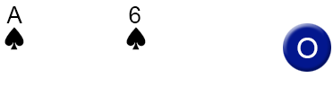
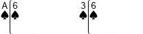
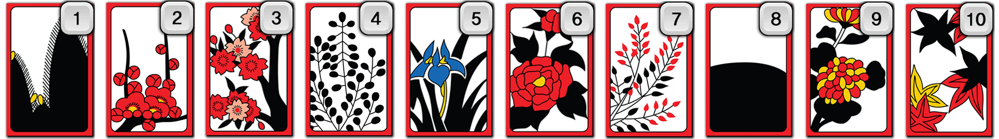

Every day at 0:00 am, the game is reset and the game is played 1440 times a day
A card is called number 1, and J, Q, and K cards are called number 0. (We use 20 minutes / 3 point card.)
The total number of cards is calculated, so that the player with a unit number close to 9 wins.
It is an original baccarat game.

Every day at 0:00 am, the game is reset and the game is played 1440 times a day.
Only cards A, 2, 3, 4, 5, 6, 7, 8, 9 and 10 except J, Q and K cards are used.
It is a game where you guess if the total value of hidden card and open card is odd or even.

Every day at 0:00 am, the game is reset and the game is played 1440 times a day
Only numeric cards is used except for J, Q, and K cards. A card is equal to 1.
It is a game in which a player close to 9 wins by competing a banker card individually with each player.

Every day at 0:00 am, the game is reset and the game is played 1440 times a day
Only 1 , 2, 3, 4, 5, 6, 7, 8, 9, 10 high-stop cards are used.

The main game exists in two ways.
1. Winner Match / GO VS Stop Estimated Win, Go + Madame VS Stop + Madame
2. Odd-even match / GO & STOP each, high + Madame odd-even / stop + Madame odd-even.